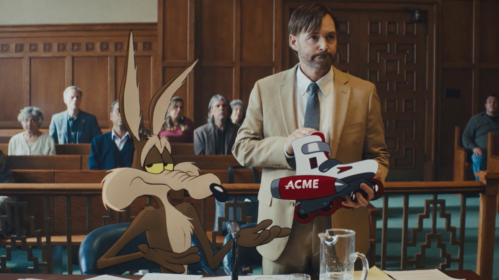
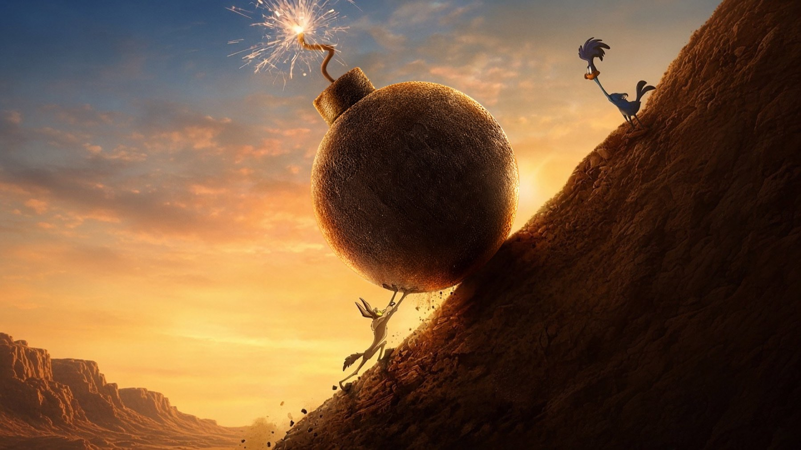
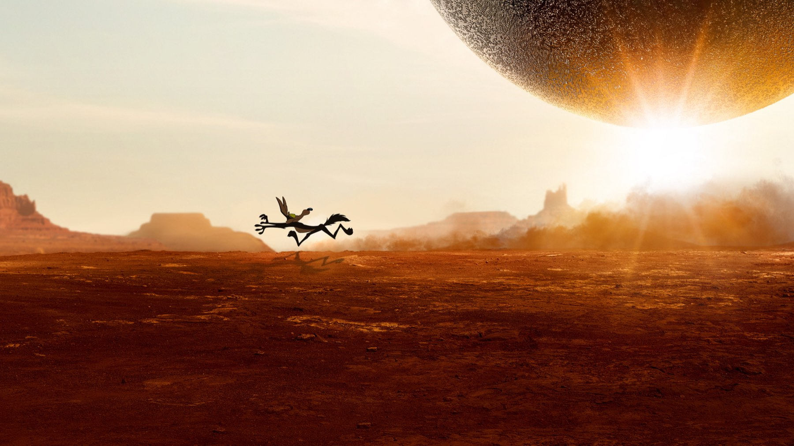

Coyote vs. Acme: i Looney Tunes vanno in tribunale
Un film chiuso in un cassetto e salvato dai fan: la causa di Willy il Coyote contro la Acme è una commedia legale più intelligente di quanto prometta.
Da decenni Willy il Coyote ha comprato prodotti Acme che gli sono esplosi in faccia, e nessuno si è mai chiesto di chi fosse la colpa. Coyote vs. Acme parte da qui: se un cliente si fa male così tante volte, non c'è forse una causa da fare? La risposta di Dave Green è una commedia legale in cui attori in carne e ossa e personaggi disegnati dividono la stessa aula.
La premessa: un processo che sembra uno scherzo e non lo è
Il film nasce da un'idea che non è nuova: secondo la scheda di MYmovies è ispirato a un articolo umoristico pubblicato dal New Yorker nel 1990 a firma di Ian Frazier, che immaginava proprio una causa del Coyote contro l'azienda di Beep Beep. Qui la causa prende corpo. Will Forte è Kevin Avery, avvocato senza clienti che accetta il caso; Lana Condor è Paige Avery; John Cena è Buddy Crane, il legale della Acme.
La scena scelta come immagine d'apertura, con Willy seduto al tavolo della difesa mentre Will Forte mostra in aula un pattino Acme a razzo, dice quasi tutto sul tono. Il tribunale è fotografato con sobrietà, legno scuro e volti seri; in mezzo, un coyote disegnato scrolla le spalle accanto a un avvocato che regge il corpo del reato, un pattino con razzo. La comicità nasce dal contrasto: il mondo reale tratta con compostezza un'assurdità cartoon, e il cartoon resta a guardare con quegli occhi stanchi che il personaggio ha da sempre.
Perché funziona: la satira sulle grandi aziende
Il merito principale è aver capito che la gag di Willy è già una storia di responsabilità. Una fabbrica vende da sempre un oggetto pericoloso a un cliente testardo: basta spostarlo in aula e diventa satira. Andrea Fornasiero, su MYmovies, lo descrive come un «legal drama dell'assurdo» e ci vede un attacco all'impunità delle multinazionali; Domenico Misciagna, su ComingSoon, parla di un film che «trasuda intelligenza» e lo mette tra i migliori eredi di Chi ha incastrato Roger Rabbit.
La nostra sintesiIl Coyote non perde perché è sfortunato: perde perché nessuno ha mai dovuto risponderne. Il film se ne accorge e ci costruisce sopra una commedia intera.
Il confronto con Roger Rabbit è azzeccato ma anche pericoloso: il modello di partenza è qui l'aula di giustizia, un genere con regole rigide e sviluppi prevedibili. Il copione di Samy Burch, con una storia firmata da James Gunn e Jeremy Slater, se la cava mettendo in primo piano il rapporto tra il Coyote e il suo avvocato, che dà alle gag un filo emotivo. Secondo Misciagna il film regge anche perché non nega il carattere del protagonista: Willy resta ostinato, e la perseveranza viene raccontata come difetto e virtù insieme.

Questa immagine ricorda Sisifo: il Coyote spinge una bomba grande come una collina e Beep Beep guarda dall'alto. È il riassunto di tutta l'idea. Un perdente eterno che non smette di provarci può far ridere e commuovere nello stesso gesto, ed è il motivo per cui un personaggio nato per le gag può reggere anche un lungometraggio.
Dove rallenta
I difetti, per chi ha visto il film con occhio severo, sono due. Misciagna, che dà 3,5 su 5, segnala che la parte centrale rallenta per la ripetitività della struttura: udienza, testimone, gag, di nuovo udienza. È il rischio di ogni commedia di tribunale, e qui pesa di più perché il pubblico conosce già il meccanismo del Coyote. Il secondo limite riguarda l'animazione: sempre secondo ComingSoon, la grafica in cel shading è solida ma resta inferiore al disegno a mano dei cartoni classici. Sulla scheda di MYmovies il film risulta un ibrido tra riprese dal vero e disegni in due e tre dimensioni.
Il cast fa la sua parte. Will Forte ha il compito più difficile, perché deve recitare davanti a un personaggio che in scena non c'è e dargli un peso; John Cena, nei panni dell'antagonista Buddy Crane, viene indicato da MYmovies tra le prove comiche migliori del film. Sono i volti noti dei Looney Tunes, però, a dare il ritmo: Misciagna cita i cammei di Bugs Bunny, Daffy Duck e Foghorn Leghorn, ben integrati nella storia, mentre la voce di molti personaggi è di Eric Bauza.
Il film che nessuno doveva vedere
La storia fuori dallo schermo è quasi più singolare di quella dentro. Annunciato nell'agosto 2018, con Dave Green ingaggiato alla regia a dicembre 2019, il film fu girato tra marzo e maggio 2022 ad Albuquerque, nel New Mexico. Nel novembre 2023 Warner Bros. Discovery lo mise da parte, a opera finita, per ottenere una svalutazione fiscale di circa 30 milioni di dollari: una scelta che provocò proteste e un'ondata di sostegno da parte del pubblico. A marzo 2025 Ketchup Entertainment ne ha comprato i diritti per 50 milioni di dollari.
Will Forte, intervistato dopo l'uscita, ha raccontato di essersi sentito per un periodo un po' ingannato e di trovare nelle recensioni positive la conferma di non essere stato pazzo a credere nel film. Gli incassi gli hanno dato ragione: a ottobre 2026, secondo Wikipedia, il film ha superato i 110 milioni di dollari nel mondo, a fronte di un budget indicato tra 70 e 72 milioni.
Come è stato accolto
A ottobre 2026 Rotten Tomatoes assegna al film il 96% di recensioni positive su 296, con il pubblico al 94%; su Metacritic il punteggio è 77 su 100 (46 recensioni) e il CinemaScore, cioè il voto del pubblico in sala negli Stati Uniti, è A. In Italia il tono è simile ma più sfumato: MYmovies lo accoglie come una satira originale, ComingSoon lo promuove con riserve sul ritmo. Un consenso così largo, per un film che nessuno voleva far uscire, è già parte del racconto.
Dove vederlo e a chi lo consigliamo
Coyote vs. Acme è uscito nei cinema italiani il 2 settembre 2026. Al 4 ottobre 2026 TMDB non segnala una disponibilità in abbonamento o a noleggio in Italia, quindi per ora il modo sicuro di vederlo è la sala, se è ancora in programmazione vicino a voi. Lo consigliamo a chi è cresciuto con i Looney Tunes e vuole vederli trattati con rispetto, ai genitori in cerca di un film che non annoi, e a chi ama le satire sulle grandi aziende travestite da commedia. Meno adatto a chi cerca un film d'azione o un'animazione tradizionale curata nei dettagli.

Una premessa folle trattata con serietà, ed è questa la sua forza: Willy il Coyote ha finalmente una causa da vincere, e noi ci schieriamo dalla sua parte. Perde un po' di brio quando il processo diventa ripetitivo e l'animazione non eguaglia il disegno a mano, ma il cuore e l'intelligenza della satira bastano a farne un film da recuperare in sala.
Domande frequenti
Quando esce Coyote vs. Acme in Italia?
Coyote vs. Acme è arrivato nei cinema italiani il 2 settembre 2026, secondo la scheda di MYmovies. Negli Stati Uniti era uscito il 28 agosto 2026.
Di cosa parla Coyote vs. Acme?
Willy il Coyote cita in giudizio la Acme Corporation per i danni causati da decenni di prodotti difettosi. Lo assiste Kevin Avery, un avvocato in difficoltà interpretato da Will Forte; dall'altra parte c'è Buddy Crane, il legale della multinazionale, con il volto di John Cena.
Perché il film è rimasto per anni in un cassetto?
Nel novembre 2023 Warner Bros. Discovery decise di non distribuire il film già finito, per ottenere una svalutazione fiscale di circa 30 milioni di dollari. Dopo le proteste del pubblico, a marzo 2025 i diritti sono stati acquistati da Ketchup Entertainment per 50 milioni.